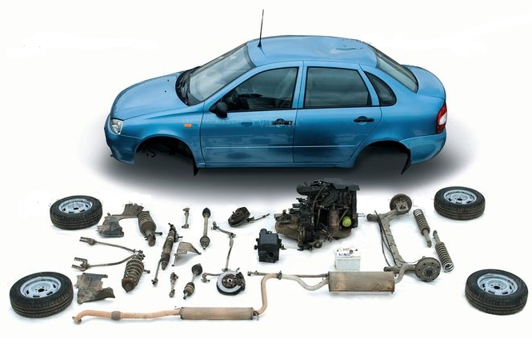
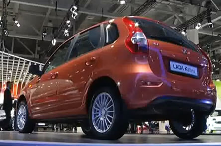
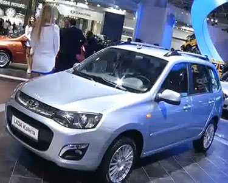

- Общие сведения
- Особенности модификаций
- Идентификационные номера
- Тех. характеристики
- Органы управления
- Щиток приборов
- Замок зажигания
- Меры безопасности
- Инструменты и приспособления
- Эксплуатационные материалы
- Подготовка к ТО
- Периодическое ТО
- Неисправности и способы их устранения
- Антикоррозийные составы
- Двигатель 1,4
- Проверка двигателя
- Моторное масло и масляный фильтр
- Давление масла в двигателе
- Декоративная накладка двигателя
- Компрессия в цилиндрах двигателя
- Ремень ГРМ
- Ремень ГРМ - замена
- Ролики ремня ГРМ
- Крышка головки блока цилиндров
- Сальники распределительных валов
- Распределительные валы
- Гидротолкатели
- Маслосъемные колпачки
- Головка блока цилиндров
- Притирка клапанов
- Передний сальник коленвала
- Маховик
- Задний сальник коленчатого вала
- Поддон картера двигателя
- Маслозаборник
- Масляный насос
- Поршневые кольца и шатунные вкладыши
- Поршень и шатун
- Опоры силового агрегата
- Система охлаждения
- Проверка системы охлаждения
- Охлаждающая жидкость
- Расширительный бачок
- Термостат
- Насос охлаждающей жидкости
- Дополнительный резистор электровентилятора
- Электровентилятор
- Радиатор охлаждения двигателя
- Система питания
- Проверка системы питания
- Воздушный фильтр
- Дроссельная заслонка
- Трос привода дроссельной заслонки
- Дроссельный узел
- Впускной модуль
- Сброс давления в топливопроводе
- Топливный фильтр
- Топливная рампа
- Топливный модуль
- Датчик указателя уровня топлива
- Сетчатый фильтр топливного модуля
- Топливный насос
- Топливный бак
- Система улавливания паров топлива
- Система управления двигателем
- Проверка системы управления двигателем
- Предохранители и реле двигателя
- Катушки зажигания
- Свечи зажигания
- Форсунки
- Регулятор холостого хода
- Клапан продувки адсорбера
- Датчик положения коленчатого вала
- Датчик положения распределительного вала
- Датчик температуры охлаждающей жидкости
- Датчик положения дроссельной заслонки
- Датчик детонации
- Датчик массового расхода воздуха
- Датчик концентрации кислорода
- Датчик скорости автомобиля
- Электронный блок управления (ЭБУ)
- Система выпуска отработавших газов
- Проверка выпуска отработавших газов
- Подвеска системы выпуска отработавших газов
- Основной глушитель
- Дополнительный глушитель
- Каталитический коллектор
- Двигатель 1,6
- Проверка уровня масла
- Ремень ГРМ
- Замена ремня ГРМ
- Натяжной ролик ремня ГРМ
- Сальник распредвала
- Ресивер двигателя
- Топливная рампа
- Прокладки впускного и выпускного коллектора
- Прокладка крышки ГБЦ
- Регулировка зазоров клапанов
- Распредвал
- Маслосъемные колпачки
- Головка блока цилиндров
- Поршневые кольца и шатунные вкладыши
- Поршень и шатун
- Высоковольтные провода
- Свечи зажигания двигателя
- Катушка зажигания
Эксплуатация
Двигатель
Двигатель 1.4
Двигатель 1.6
Info
 |
|||||||||||||||||||||||||||||||||||||||||||||||||||||||||||||||||||||
Параметры |
Автомобиль и его модификации |
||||
ВА3.11173. |
ВАЗ.11183. |
ВАЗ-11193. |
LADA KALINA |
LADA KALINA |
|
Тип кузова |
5-дверный |
4-дверный |
5-дверный хзтчбек |
||
Схема компоновки |
с поперечным расположением двигателя и приводом на передние колеса |
||||
Количество мест, чел. |
5 |
||||
Количество мест при полностью сложенных |
2 |
||||
Снаряженная масса, кг |
1110 |
1080 |
1110 |
||
Разрешенная (полная) максимальная масса |
1585 |
1555 |
1535 |
||
Дорожный просвет с РММ, не менее, мм |
160 |
140 |
|||
Полная масса буксируемого прицепа*, кг: |
|||||
- не оборудованного тормозами |
450 |
эксплуатация с прицепом |
|||
- оборудованного тормозами |
900 |
||||
* при этом вертикальная нагрузка на шар тягово-сцепиого устройства в статическом состоянии должна быть не более 50 кг.
О выходе LADA Kalina (2) второго поколения

Олег Груненков,
директор проекта LADA Kalina, ОАО "АвтоВАЗ"
- ЛАДА Калина производится с 2005 года и с этого времени стиль этого автомобиля не претерпевал никаких изменений, хотя за последние полтора года мы провели много дополнительных опций - это подголовники, навигационная система, парктроник, датчик дождя, автоматическое включение фар. Ну а теперь мы представляем новое поколение "Калины" где в первую очередь изменены интерьер и экстерьер. Разработка стиля этого автомобиля это продукт ВАЗ-овских инженеров и стилистов, кроме накладки переднего бампера, это стилевое решение принадлежит Стиву Мартину. Интерьер будет изготавливаться в двух разных цветах — темный цвет и традиционный базальт, который известен по ныне производимому автомобилю ЛАДА Гранта и новый цвет разработанный специально для ЛАДА Калина 2 - цвет "титан", более прохладный, более строгий. Салон имеет дополнительную отделку, здесь можно увидеть дополнительные декоративные вставки которые делают интерьер более интересным, более привлекательным. Есть возможность комплектации автомобиля автоматической коробкой передач или механической коробкой передач нового поколения с тросовым типом, но вероятнее всего что этот современный автомобиль будет востребован больше с коробкой "автомат". Объем двигателя у нее 1,6 л., предусмотрена ABS, наличие четырех подушек безопасности — не только фронтальные для водителя и пассажира, но и подушки встроенные спинки передних сидений. Автомобиль будет отвечать требованиям Евро 4. Ценовая ниша останется прежней и будет находиться между ЛАДА Гранта и ЛАДА Приора.
Сегодня мы представляем две новые модели ЛАДА Калина 2 — это хэтчбек и универсал, это самые продаваемые автомобили в России и мы надеемся что они в дальнейшем останутся такими же востребованными. Со временем мы сделаем наш автомобиль более современным, понятным, более удобным, более конкурентоспособным. Данный автомобиль имеет новый, более современный стиль более выразительным экстерьером. Изменена форма передней части автомобиля, которая стала более функциональной, блок фара имеет встроенный ходовой огонь, который хорошо зарекомендовал себя на автомобилях ЛАДА Гранта, это позволяет не включать фары, о которых можно забыть, а огни включаются автоматически при повороте ключа зажигания. Интерьер этого автомобиля тоже новый, и здесь представлена концепция цветовой гаммы. Изменения коснулись не только кузова интерьера, изменения появились и двигателя, тут будет использоваться новый двигатель который заимствован у ЛАДА Гранта, улучшенными показателями по расходу топлива и по динамике разгона. Шасси автомобиля также претерпят некоторые изменения, доработкой которых занимаются вместе с компанией Renault. Автомобиль будет иметь три комплектации - стандарт, норма и люкс.
Стоит отметить что лицевые штампы для Калины заказывались в Японии, тем самым гарантируя хорошее качество производимого по ним кузова. Оснастка на интерьер изготавливается в Корее, обеспечивая хорошее качество, сопрягаемость и функциональность этих деталей. За систему безопасности в этом автомобиле отвечает немецко-японская компания, которая производит не только рулевое колесо, но и все подушки безопасности и ремни безопасности. Многие электромеханические узлы системы в этом автомобиле становится современными и производятся на современных заводах России или за рубежом.
Учитывая большой интерес со стороны потребителей мы стараемся сделать автомобиль более интересным, более экономичным и динамичным.